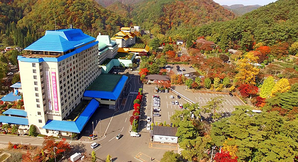

花巻温泉
花巻温泉が位置する岩手県花巻市は、西側に奥歯山脈、東側には北上高地の山並みが連なる、美しい緑に囲まれたところです。豊富な自然が楽しめる花巻温泉には、大規模なホテルや旅館が4軒あり、東北を代表する温泉リゾート地と謳われます。
花巻温泉の泉質は体に優しい単純温泉です。無色無臭で、刺激が少ないため、子どもから年配者まで幅広い世代の人が楽しむことができ、美肌効果もあり女性にも人気の湯です。
花火や祭りの賑やかさを楽しんだ後に、ゆったりと味わう花巻温泉の湯はまた格別の心地よさがあるでしょう。